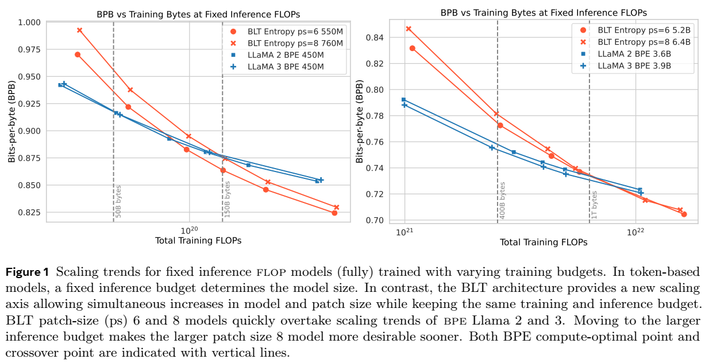
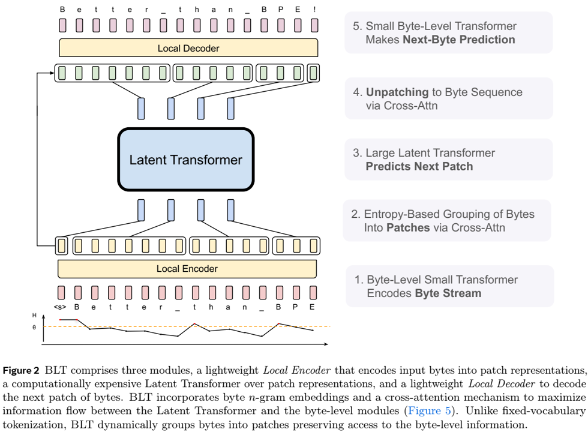

论文阅读五十：字节潜在Transformer：Patches比Tokens扩展性好
摘要
我们介绍了Byte Latent Transformer（BLT），这是一种新的字节级LLM架构，它首次大规模地匹配了基于标记化的LLM性能，并显著提高了推理效率和鲁棒性。BLT将字节编码为动态大小的补丁，作为主要的计算单元。补丁（pathes）根据下一个字节的熵进行分割，在数据复杂性增加的地方分配更多的计算和模型容量。我们首次对字节级模型进行了触发器控制的缩放研究，最大可达8B个参数和4T个训练字节。我们的结果证明了在没有固定词汇表的情况下，对原始字节训练的模型进行缩放的可行性。由于在数据可预测的情况下动态选择长补丁，以及推理和长尾泛化的定性改进，训练和推理效率都得到了提高。总体而言，对于固定的推理成本，BLT通过同时增加补丁和模型大小，显示出比基于标记化的模型更好的扩展性。论文地址
引言

我们引入字节潜在Transformer（BLT），一种免分词架构，从原始字节数据学习，且首次匹配基于标记化的大规模模型，在效率和鲁棒性方面有了显著提高（§6）。现有LLMs几乎完全端到端训练，除了标记化——将字节分组为一组静态标记的启发式预处理步骤。这样的标记会影响字符串的压缩方式，导致诸如域/模态敏感性（Dagan等人，2024）、对输入噪声的敏感性（§6）、缺乏拼写知识（Edman等人，2024）和多语言不平等（Liang等人，2023；Petrov等人，2024:Limisiewicz等人，2024.）等缺点。
标记化以前是必不可少的，因为由于序列长度较长，直接在字节上训练LLMs的规模成本过高（Xue等人，2022）。先前的研究通过采用更有效的自我注意力（El Boukkouri等人，2020；Clark等人，2022）或无注意力架构（Wang等人，2024）来缓解这一问题（§8）。然而，这主要有助于训练小型模型。从规模上讲，Transformer的计算成本主要由在每个字节上运行的大型前馈网络层决定，而不是注意力机制的成本。
为了有效地分配计算，我们提出了一种动态的、可学习的方法，将字节分组为补丁（patches）（§2），以及一种混合字节和补丁信息的新模型架构。与标记化不同，BLT没有固定的补丁词汇表。任意字节组通过轻量级的学习编码器和解码器模块映射到潜在的补丁表示。我们证明，这比基于标记化的模型更有效地分配计算。
基于标记化的 llms 为每个标记分配相同数量的计算。这会以效率换取性能，因为标记是由压缩启发式方法诱导的，而这些方法并不总是与预测的复杂性相关。我们架构的核心思想是，模型应该动态地将计算分配到需要的地方。例如，不需要大型transformer来预测大多数单词的结尾，因为与选择新句子的第一个单词相比，这些都是相对简单、低熵的决策。这反映在BLT的架构中（第3节），其中有三个transformer模块：两个小的字节级局部模型和一个大型全局潜在transformer（图2）。为了确定如何将字节分组为补丁，从而确定如何动态分配计算，BLT根据下一个字节预测的熵对数据进行分段，创建具有相对均匀信息密度的上下文化字节分组。

我们首次对高达8B个参数和4T个训练字节的字节级模型进行了FLOP控制的缩放研究，表明我们可以在没有固定词汇标记的情况下，从字节开始大规模端到端地训练模型。总体而言，BLT与Llama 3的训练FLOP控制性能相匹配，同时在推理时使用的FLOPs减少了50%（§5）。我们还表明，直接使用原始字节可以显著改进数据长尾的建模。BLT模型比基于标记化的模型对噪声输入更稳健，并在拼写知识、音韵学和低资源机器翻译任务中显示出增强的字符级理解能力（§6）。最后，使用BLT模型，我们可以同时增加模型大小和补丁大小，同时保持相同的推理FLOP预算。平均而言，较长的补丁大小可以节省计算资源，这些计算资源可以重新分配以增加全局潜在transformer的大小，因为它的运行频率较低。我们进行了推理FLOP控制的缩放实验（图1），并观察到比基于标记化的架构明显更好的缩放趋势。
综上所述，本文做出了以下贡献：1）我们引入了 BLT，这是一种字节潜在 LLM 架构，可动态分配计算以提高FLOP 效率；2）我们展示了在高达 8B 规模下，我们实现了与 Llama 3 的训练FLOP控制奇偶校验，同时可以选择以评估指标中的轻微损失换取高达 50% 的FLOP效率增益；3）BLT 模型为扩展 LLMs 开辟了一个新维度，其中模型大小现在可以在保持固定推理预算的同时进行扩展；4）我们展示了 BLT 模型对输入噪声的改进的鲁棒性，以及它们对基于标记的 LLMs 遗漏的输入数据子字方面的感知。我们在 https://github.com/facebookresearch/blt 发布了 BLT 的训练和推理代码。